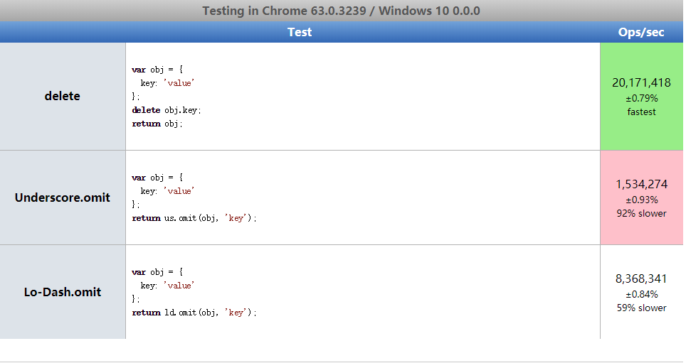

JavaScript数据类型
基本数据类型
Undefined、Null、Boolean、Number、String
引用数据类型
Object、Array、Function等
基本数据类型存放在栈中。存放在栈内存中的简单数据段，数据大小确定，内存空间大小可以分配，是直接按值存放的，所以可以直接访问。引用类型存放在堆中。引用类型（object）是存放在堆内存中的，变量实际上是一个存放在栈内存的指针，这个指针指向堆内存中的地址。每个空间大小不一样，要根据情况开进行特定的分配。
|
|

Object对象的比较
|
|
1.利用JSON.stringify()
缺点：Object属性顺序需要完全一致
2.利用_.isEqual()
_.isEqual(value, other)
参数：value比较的值，other拿来比较的值
返回值：(boolean)是否相等
|
|
增删改查
增
直接设置key/value
|
|
Object.assign()
Object.assign(target, …sources)
参数：target(目标对象), sources(源对象)
返回值: 目标对象
如果目标对象中的属性具有相同的键，则属性将被源中的属性覆盖。后来的源的属性将类似地覆盖早先的属性。Object.assign 方法只会拷贝源对象自身的并且可枚举的属性到目标对象。该方法使用源对象的[[Get]]和目标对象的[[Set]]，所以它会调用相关 getter 和 setter。因此，它分配属性，而不仅仅是复制或定义新的属性。
obj1增加’b’属性
如果不想更改原对象，可以
_.assign() & __.assignIn()
_.assignIn(object, [sources])
与.assign类似，只不过.assignIn()不仅遍历了自身，还有遗传的属性
|
|
es6解构
|
|
_.clone() & _.cloneDeep()
_.clone(value)
创建一个value的浅拷贝对象
|
|
_.cloneDeep(value)
与_.clone()类似，只不过这个方法递归地克隆属性（深拷贝）
|
|
深拷贝和浅拷贝
基本类型存放在栈中，基本类型的比较是值的比较。
应用类型存放在堆中，应用类型的比较是引用的比较。
赋值和浅拷贝的区别
改变 obj2 的 name 属性和 obj3 的 name 属性，可以看到，改变赋值得到的对象 obj2 同时也会改变原始值 obj1，而改变浅拷贝得到的的 obj3 则不会改变原始对象 obj1。但此时改变赋值得到的对象 obj2 和浅拷贝得到的 obj3 中的 language 属性的第二个值和第三个值（language 是一个数组，也就是引用类型）。结果见输出，可以看出来，无论是修改赋值得到的对象 obj2 和浅拷贝得到的 obj3 都会改变原始数据。
这是因为浅拷贝只复制一层对象的属性，并不包括对象里面的为引用类型的数据。所以就会出现改变浅拷贝得到的 obj3 中的引用类型时，会使原始数据得到改变。
深拷贝：将 B 对象拷贝到 A 对象中，包括 B 里面的子对象，
浅拷贝：将 B 对象拷贝到 A 对象中，但不包括 B 里面的子对象
| – | 和原数据是否指向同一对象 | 第一层数据为基本数据类型 | 原数据中包含子对象 |
|---|---|---|---|
| 赋值 | 是 | 改变会使原数据一同改变 | 改变会使原数据一同改变 |
| 浅拷贝 | 否 | 改变不会使原数据一同改变 | 改变会使原数据一同改变 |
| 深拷贝 | 否 | 改变不会使原数据一同改变 | 改变不会使原数据一同改变 |
删
使用delete
|
|
优点：最常用有效的办法
缺点：性能较差，不建议在规模较大的循环中使用
undefined
|
|
性能较好，但是键值仍会存在Object中，可在有些需要的情况下使用。
_.omit()
_.omit(object, [paths])
参数：object (Object) 源对象， [paths] ( …(string|string[]) ) 删除的属性名
返回值：新对象
|
|

_.unset()
_.unset(object, path)
参数：object (Object) 修改的对象，path (Array|string) 属性的路径
返回值：(boolean)返回属性是否删除成功
|
|
es6
|
|
查
根据key值
一般来说，访问对象属性使用的都是点表示法，不过在JavaScript中也可以使用方括号表示法来访问对象的属性，在使用方括号语法时，应该将要访问的属性以字符串的形式放在方括号中。
注意：当用变量来访问属性时，必须使用方括号表示法
通常，除非必须使用变量来访问属性，否则建议使用点表示法。
_.find()
参数：collection (Array|Object)目标对象，[predicate=_.identity] (Function)判断函数，[fromIndex=0] (number)开始序号
返回值：返回第一个匹配的元素，否则为undefined。
数组也同样适用
.findLast()与.find()类似，只不过从右向左查找。
_.pick()
参数：object (Object)源对象，[paths] (…(string|string[]))要提取的属性名。
返回值：返回一个新的Object
|
|
_.pickBy()
参数：object (Object)源对象，[predicate=_.identity] (Function)判断函数。
返回值： 返回一个新Object
|
|
改
点表示法、中括号表示法
|
|
和上面查的方法一致
_.set()
_.set(object, path, value)
参数：object (Object) 更改的对象，path (Array|string) 属性的路径，value (*):需要设置的值
返回值：(Object)返回对象
|
|
_.update
_.update(object, path, updater)
参数：object (Object) 修改对象，path (Array|string) 属性路径，updater (Function) 产生更新值的函数。
返回值：(Object) 返回对象
|
|